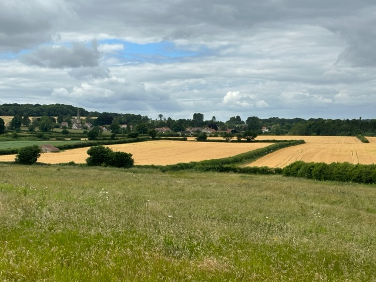

A preview of the trails which are available follows, please have a browse and select a few options which are suitable to your capabilities.
Registration for Saturday’s trails will take place in the marque on Friday afternoon.
Registration for Sundays runs will be on Saturday afternoon.
At trail registration, everyone will receive a Nash Hash wristlet which will correspond to the bus they should be travelling on.
These wristlets also indicate those who have paid their registration and so are entitled to food, beer etc.
Anyone without a wristlet at the venue will be checked to ensure no freeloaders.
Saturday
1. Ball breaker, Rosebury topping, 13k , 700m of climb. A trail around iconic Yorkshire landmarks, not for the faint hearted!
2. Medium, Copmanthorpe and other villages local to the venue, 10k mostly flat. No bus so a later start.

3. Medium, Wellburn, 11.5k, 180m of climb. With a great blend of terrains, this is a proper Yorkshire trail!
4. Medium, Sutton Bank, 10k, 350m of climb. Stunning views from sections of the Cleveland Way.
5. Medium, Yearsley, 10k, 320m of climb. A woodland and forest trail with views of Ampleforth college.
6. Medium, Wetherby, 9.9k, 104 m of climb. A gentle trail near the river.
7. Walk, Yearsley, 6k, 150m of climb. A shortened version of (5) for walkers only.
8. Medium, Terrington, 10.5k, 257m of climb. An undulating and picturesque trail through fields and meadowland.
9. No trail! A bus which will drop you at York races or the city centre for essential shopping and sightseeing
SUNDAY
1. Long, Bishopthorpe, 7 to 10 miles, almost flat. The closest trail to York city centre, streets, fields and river views on a trail with several short cuts. Runners only.
2. Long trail and medium walk, Knaresborough, 12k + 6k, 260m of climb. Pretty trail on all terrains around the market town of Knaresborough.
3. Medium, Pately Bridge, 9k, 212m of climb. Tracks and paths surrounding this Yorkshire jewel.
4. Short trail or walk, Masham, 5k pretty flat. Two busses are going as this is THE infamous Bra’s and Pants trail. YOU MUST WEAR A BRA AND PANTS IF YOU WANT TO GO! (Over clothing accepted)
5. Walk, Thornton le Dale, 6k, 150m of climb. A stroll around a quintessential Yorkshire village with a top class pastry shop!
6. Run, Askham Bryan, 8k, almost flat. A run through fields and villages close to the venue. Ideal for those who have to leave Sunday
7. Walk Askham Bryan, 6k, almost flat. As (6) intended for those who are leaving early or hate buses!
8. No trail, a bus to drop you off in York for shopping/sightseeing.
On on
Rectum
Hareraiser